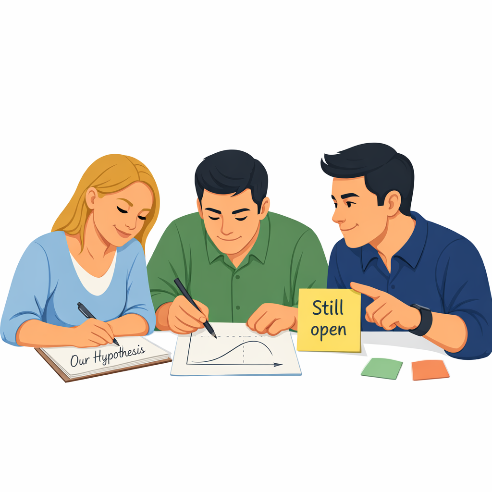

Section 21.1
What Coaches Actually Do
In Lean Learning Cycles, coaches are not template police or project managers. Their main job is to create the conditions where teams can learn quickly and safely — and to help them think scientifically about their real work.
Guard the cadence
- Help the team establish and respect regular cycles and integration events.
- Protect time for planning, experiments, and reviews against other pressures.
Clarify questions and gaps
- Challenge vague goals like “reduce risk” until they are expressed as concrete knowledge gaps and hypotheses.
- Bring the conversation back to “What decision are we trying to enable?” and “What do we need to know to decide?”
Support experiment design
- Help the team design experiments that are small, fast, and focused.
- Encourage use of the scientific method and LAMDA patterns without turning them into heavy rituals.
Make learning visible
- Promote the use of simple K Briefs and visual knowledge, and ensure integration events use them to drive decisions.
- Help teams connect new learning to existing knowledge, so the knowledge base grows instead of scattering into slide decks.
Coach behaviour, not just content
- Model curiosity when surprises appear.
- Ask open questions instead of giving quick answers.
- Reinforce behaviours like surfacing problems early, testing assumptions, and reflecting after each cycle.
“Coaches are there to keep the system honest: to make sure cycles are about knowledge and decisions, not about ticking boxes.”
Section 21.2
What Teams Actually Do
Teams bring the technical and customer reality into Lean Learning Cycles. Their role is to turn real uncertainties into experiments and to translate results into decisions and design changes.

Bring real problems and examples
- Use current or recent projects as the basis for knowledge gaps.
- Share where late surprises, quality issues, or customer complaints have hurt in the past.
Frame knowledge gaps and hypotheses
- Help define what is unknown or risky in clear, operational terms.
- Propose testable hypotheses based on their understanding of physics, customer use, or process behaviour.
Design and run experiments
- Build rigs, prototypes, simulations, or trials that can be run safely within the cycle.
- Collect data and observations — not just pass/fail results — with an emphasis on limits and trade-offs.
Capture K Briefs and visual knowledge
- Summarise key experiments on one-page K Briefs.
- Translate results into simple curves, diagrams, or updates to PBS, priority matrices, or risk lists.
Participate actively in integration events
- Explain what was learned in their own words.
- Engage in decisions about narrowing options or redefining questions.
- Suggest improvements to the next cycle based on what did or didn’t work.
Section 21.3
Working Together: A Small Example
Returning to the “Compact Lift Module” story: the coach helped the team write a one-page framing of the first cycle, clarify which drive concept decision they were really working toward, and design two short experiments around noise and serviceability. The team built quick rigs, ran tests at key loads, conducted a simple service trial with standard tools, and captured their insights in a K Brief and a rough trade-off curve.
At the integration event: the coach facilitated the discussion, keeping it focused on knowledge and decisions. The team presented what they learned and proposed removing one weak option from the set. Together, they updated their increment plan and chose the next knowledge gaps for the following cycle.
“Neither role is glamorous, but together they shift the pattern from ‘hope and commit’ to ‘learn and decide’.”